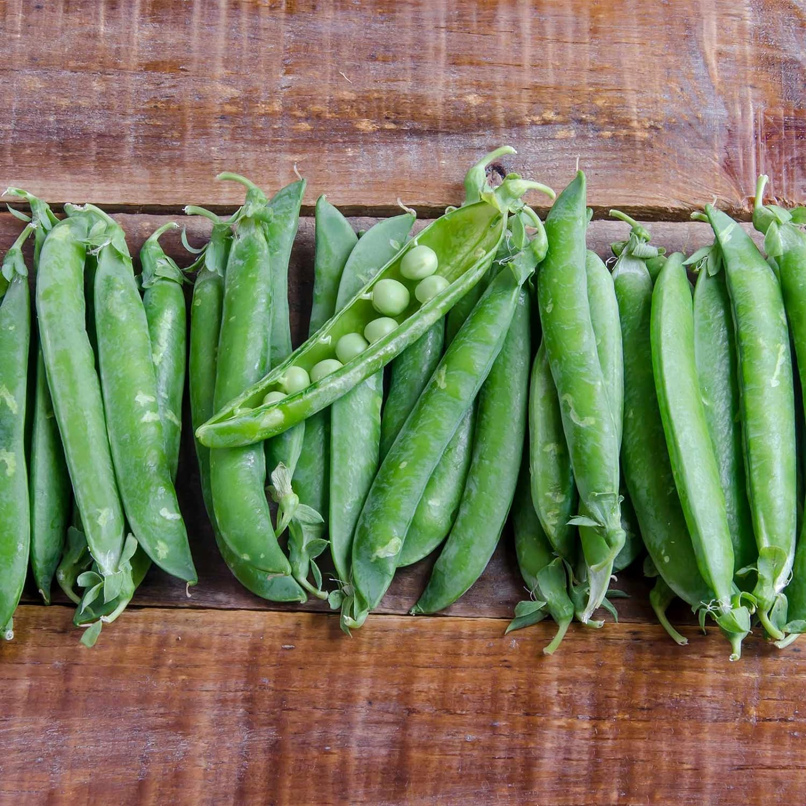

Easy Garden Green Beans

- 1 pound fresh green beans, trimmed
- 3 tablespoons olive oil
- 3 tablespoons freshly grated Parmesan cheese
- 2 tablespoons white wine vinegar
- 3 cloves garlic, sliced
- 1 pinch salt
- 1 pinch ground black pepper
- 2 tablespoons chopped fresh parsley
- Gether all ingredients
- Place a steamer insert into a saucepan and fill with water to just below the bottom of the steamer. Bring water to a boil. Add green beans, cover, and steam to your desired degree of tenderness, about 5 minutes.
- Transfer steamed green beans to a serving bowl. Add olive oil, Parmesan cheese, white wine vinegar, garlic, salt, and pepper; toss until evenly coated. Let stand for 10 minutes.
- Remove garlic slices and garnish with parsley before serving.
- Serve and enjoy!